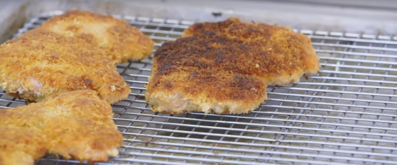

Куриные бедрышки в кляре

Филе куриного бедра отбить, чтобы они были тоньше и одинаковой толщины. Посолить, поперчить.
В отдельой глубокой тарелке взбить яйцо с 1ч.л. горчицы и 1ч.л. кайенского перца. В другую тарелку насыпать кукурузного крахмала. И в еще одну насыпать панировочных сухарей. Каждое филе окунать сначала в крахмал, затем в яйцо и в конце в панировку.
На сковороду налить подсолнечное масло так, чтобы дно было полностью покрыто, дождаться, пока оно разогреется и обжаривать филе с двух сторон. После выложить на бумажные полотенца чтобы избавиться от лишнего жира.